1. M5 version:
1.1. Install different versions of Ubuntu system in Linux
1.1.1. 1 Virtual machine installation
Go to the official website to download the virtual machine Virtual Box
Or go to the official website to download the virtual machine VM ware
VirtualBox installation package: Windows hosts
VirtualBox expansion package: VirtualBox 7.0.10 Oracle VM VirtualBox Extension Pack
Of course, if you already have your virtual machine, you can skip this step.
We chose to download Virtual box because it is free.

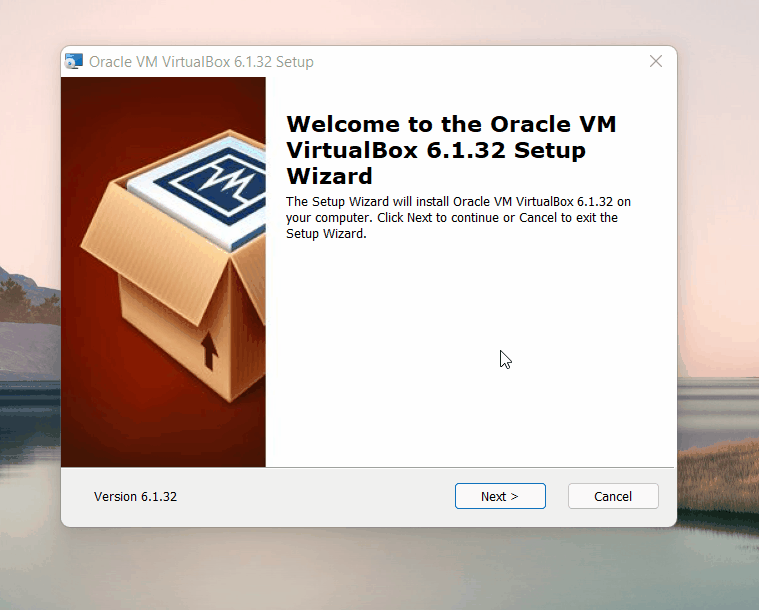
1.1.2. 2 Create a new virtual machine
2.1 Create a virtual machine
Select New in the control
Enter the virtual machine name and the location where the virtual machine is stored, select the virtual machine type as Linux, select Ubuntu 64-bit version, and proceed to the next step.
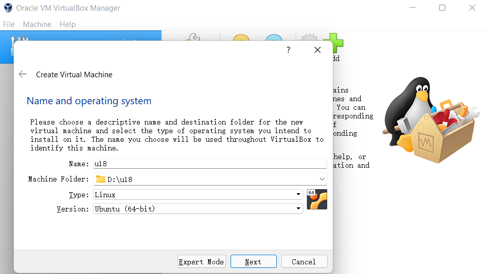
Configure the memory size according to your needs and proceed to the next step.
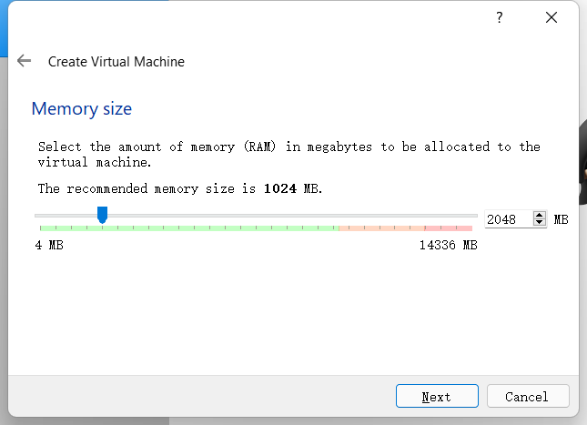
Select Create a virtual hard disk now and create it.
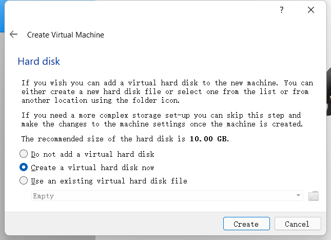
Select the VDI type for the virtual hard disk type and proceed to the next step.

Allocate the size of the virtual hard disk. Since you need to install the Ubuntu system and will also operate in the system, it is recommended that the size should not be less than 20G.
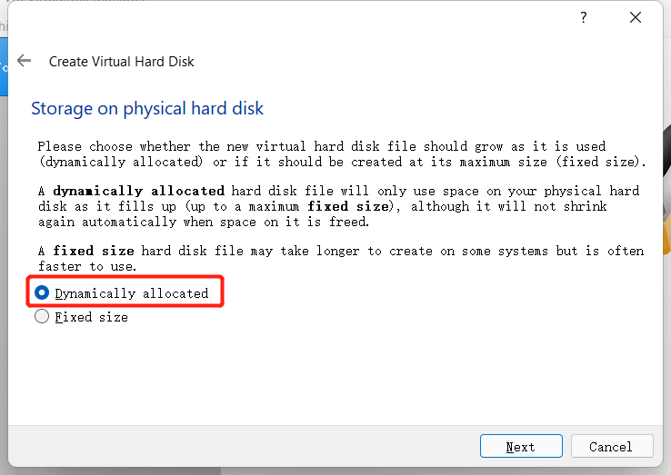
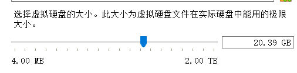
2.2 Import Ubuntu system
2.2.1 Download Ubuntu system.
Please choose the Ubuntu version to install according to your needs
Note: ROS2 needs to download 20.04 version.
The installation methods and processes of the three versions are the same. Here, the 18.04 version is used as an example for installation

After downloading, there is a file as shown in the figure:

2.2.2 Import Ubuntu into the virtual machine
Find the previously installed virtual machine in Virtual Box, enter Settings, and assign the CD to the controller in Storage:


Then open the virtual machine to install Ubuntu and click Start.
2.2.3 Ubuntu installation
Wait for the system to start, enter the Welcome interface, select "Chinese (Simplified)", and click the "Install Ubuntu" button;

Click the "Continue" button;
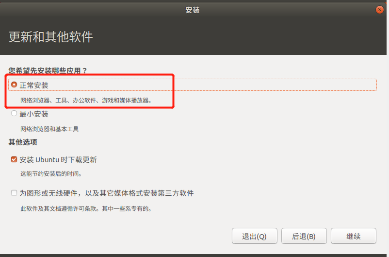
Select the "Erase the entire disk and install Ubuntu" option, and click the "Install Now" button;

Click the "Continue" button in the pop-up dialog box;

Set the geographic location and click the "Continue" button;

Set the user name and password and click the "Continue" button;
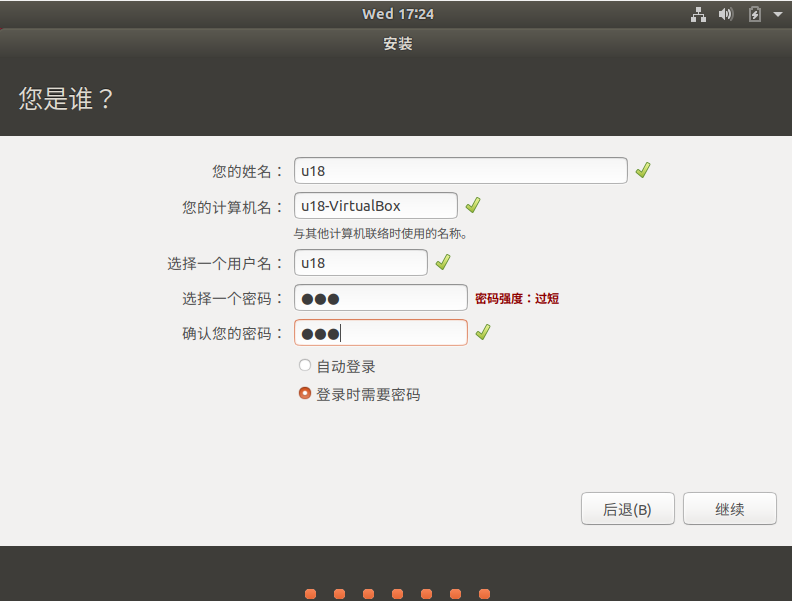
Enter the system installation interface, please wait patiently;
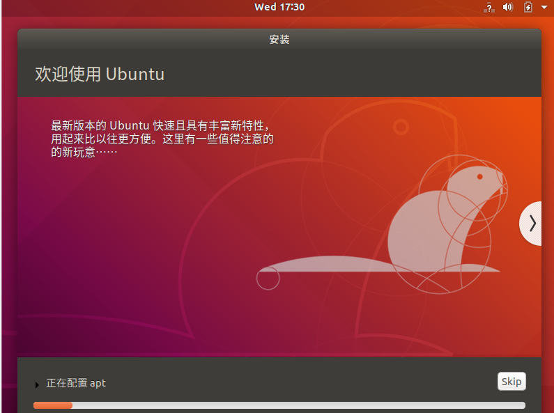
After the installation is complete, in the pop-up dialog box, click the "Restart Now" button to complete the installation.
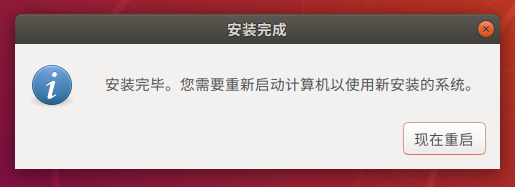
1.2. 1 ROS environment setup
1.2.1. 1.1 ROS installation
The basic development environment setup requires the installation of the robot operating system ROS, MoveIt, and git version manager. The following describes their installation methods and processes.
For myCobot 280-M5 and myCobot 320-M5 devices, please refer to the installation methods and processes described below. myCobot 280-PI and myCobot 320-PI devices only need to execute the installation of the mycobot_ros installation package.
1.1.1 Version selection
ROS has a one-to-one correspondence with Ubuntu. Different versions of Ubuntu correspond to different versions of ROS. For reference, see the following website: http://wiki.ros.org/Distributions
- Here are the ROS versions supported by Ubuntu:
- Ubuntu 16.04 / ROS Kinetic
- Ubuntu 18.04 / ROS Melodic
- Ubuntu 20.04 / ROS Noetic
Please install the corresponding ROS version according to the Ubuntu version you installed
If the versions are different, the download will fail. Here we choose Ubuntu 18.04, and the corresponding ROS version is ROS Melodic
NOTE: We currently do not provide any reference for installing ROS on Windows. If necessary, please refer to https://www.ros.org/install/
1.1.2 Start installation
1 Add source
There is no ROS software source in the software source list of Ubuntu itself, so you need to configure the ROS software source to the software list warehouse before you can download ROS. Open a console terminal (shortcut key Ctrl+Alt+T), enter the following command:
Official source:
sudo sh -c 'echo "deb http://packages.ros.org/ros/ubuntu $(lsb_release -sc) main" > /etc/apt/sources.list.d/ros-latest.list'If the download speed is slow, it is recommended to select a mirror source nearby to replace the above command. For example, Tsinghua University is:
sudo sh -c '. /etc/lsb-release && echo "deb http://mirrors.tuna.tsinghua.edu.cn/ros/ubuntu/ `lsb_release -cs` main" > /etc/apt/sources.list.d/ros-latest.list'
You will be asked to enter the user password here. Just enter the user password you set when installing Ubuntu.
2 Set up the secret key
Configure the public network secret key. This step is to let the system confirm that our path is safe, so that there is no problem downloading the file, otherwise it will be deleted immediately after downloading:
sudo apt-key adv --keyserver 'hkp://keyserver.ubuntu.com:80' --recv-key C1CF6E31E6BADE8868B172B4F42ED6FBAB17C654
The execution results are shown below:：

3 Installation
After adding a new software source, you need to update the software source list, open a console terminal (shortcut key Ctrl+Alt+T), and enter the following command:
sudo apt-get update
Execute Install ROS, open a console terminal (shortcut key Ctrl+Alt+T), and enter the following command according to your Ubuntu version:
# Ubuntu 16.04
sudo apt install ros-kinetic-desktop-full
# Ubuntu 18.04
sudo apt install ros-melodic-desktop-full
# Ubuntu 20.04
sudo apt install ros-noetic-desktop-full
It is recommended to install the complete ROS to prevent missing libraries and dependencies.
The installation process takes a long time, please be patient
- If the following error message appears in the console terminal during the installation, you need to change the software source list in /etc/apt/sources.list.

Open a console terminal (shortcut key Ctrl+Alt+T), and enter the following command:
sudo gedit /etc/apt/sources.list
- Replace all official software sources in sources.list with the following Alibaba Cloud software sources:
Ubuntu 16.04：
deb http://mirrors.aliyun.com/ubuntu/ xenial main
deb-src http://mirrors.aliyun.com/ubuntu/ xenial main
deb http://mirrors.aliyun.com/ubuntu/ xenial-updates main
deb-src http://mirrors.aliyun.com/ubuntu/ xenial-updates main
deb http://mirrors.aliyun.com/ubuntu/ xenial universe
deb-src http://mirrors.aliyun.com/ubuntu/ xenial universe
deb http://mirrors.aliyun.com/ubuntu/ xenial-updates universe
deb-src http://mirrors.aliyun.com/ubuntu/ xenial-updates universe
deb http://mirrors.aliyun.com/ubuntu/ xenial-security main
deb-src http://mirrors.aliyun.com/ubuntu/ xenial-security main
deb http://mirrors.aliyun.com/ubuntu/ xenial-security universe
deb-src http://mirrors.aliyun.com/ubuntu/ xenial-security universe
Ubuntu 18.04：
deb http://mirrors.aliyun.com/ubuntu/ bionic main restricted universe multiverse
deb-src http://mirrors.aliyun.com/ubuntu/ bionic main restricted universe multiverse
deb http://mirrors.aliyun.com/ubuntu/ bionic-security main restricted universe multiverse
deb-src http://mirrors.aliyun.com/ubuntu/ bionic-security main restricted universe multiverse
deb http://mirrors.aliyun.com/ubuntu/ bionic-updates main restricted universe multiverse
deb-src http://mirrors.aliyun.com/ubuntu/ bionic-updates main restricted universe multiverse
deb http://mirrors.aliyun.com/ubuntu/ bionic-proposed main restricted universe multiverse
deb-src http://mirrors.aliyun.com/ubuntu/ bionic-proposed main restricted universe multiverse
deb http://mirrors.aliyun.com/ubuntu/ bionic-backports main restricted universe multiverse
deb-src http://mirrors.aliyun.com/ubuntu/ bionic-backports main restricted universe multiverse
Ubuntu 20.04：
deb http://mirrors.aliyun.com/ubuntu/ focal main restricted universe multiverse
deb-src http://mirrors.aliyun.com/ubuntu/ focal main restricted universe multiverse
deb http://mirrors.aliyun.com/ubuntu/ focal-security main restricted universe multiverse
deb-src http://mirrors.aliyun.com/ubuntu/ focal-security main restricted universe multiverse
deb http://mirrors.aliyun.com/ubuntu/ focal-updates main restricted universe multiverse
deb-src http://mirrors.aliyun.com/ubuntu/ focal-updates main restricted universe multiverse
deb http://mirrors.aliyun.com/ubuntu/ focal-proposed main restricted universe multiverse
deb-src http://mirrors.aliyun.com/ubuntu/ focal-proposed main restricted universe multiverse
deb http://mirrors.aliyun.com/ubuntu/ focal-backports main restricted universe multiverse
deb-src http://mirrors.aliyun.com/ubuntu/ focal-backports main restricted universe multiverse
- After the configuration is complete, the contents of the sources.list file are as follows. Click Save and Exit.

- Update the software source list and enter in the console terminal:
sudo apt-get update
- Enter the command to install ROS in the console terminal:
# Ubuntu 16.04
sudo apt install ros-kinetic-desktop-full
# Ubuntu 18.04
sudo apt install ros-melodic-desktop-full
# Ubuntu 20.04
sudo apt install ros-noetic-desktop-full
The installation process takes a long time, please wait patiently
4 Configure ROS environment to the system
rosdep allows you to easily install the source code you want to compile or the system dependencies required by some ROS core components. Execute the following commands in the terminal in sequence to open a console terminal (shortcut key Ctrl+Alt+T).
If rosdep is not installed on your system, please use the command sudo apt install python-rosdep to install it.
If your installed Ubuntu system is version 20.04, please use the command sudo apt install python3-rosdep to install it, and execute the rosdep initialization command after completion.
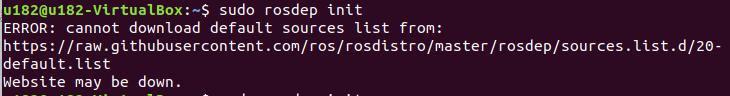
Initialize rosdep:
sudo rosdep init
If the error message shown below appears:

Solution: Modify the hosts file and enter the following command in the console terminal:
sudo gedit /etc/hosts
At the end of the file content, add the IP addresses of the following two websites to access:
199.232.28.133 raw.githubusercontent.com
151.101.228.133 raw.github.com
After the modification is completed, execute in the console terminal:
sudo rosdep init
rosdep update
After initialization is completed, in order to avoid the need to re-validate the ROS function path every time the terminal window is closed, we can configure the path to the environment variable, so that the ROS function path can be automatically validated every time a new terminal is opened. Execute the following commands in the terminal in sequence to open a console terminal (shortcut key Ctrl+Alt+T):
1.1.3 Set up the ros environment
Bash
Execute the following command:
# Ubuntu 16.04
# 将 ros 环境加入到当前控制台的环境变量
echo "source /opt/ros/kinetic/setup.bash" >> ~/.bashrc
# Ubuntu 18.04
echo "source /opt/ros/melodic/setup.bash" >> ~/.bashrc
# Ubuntu 20.04
echo "source /opt/ros/noetic/setup.bash" >> ~/.bashrc
source ~/.bashrc
Install ROS additional dependencies
Enter the following command in the terminal to install ROS additional dependencies and open a console terminal (shortcut key Ctrl+Alt+T):
sudo apt-get install python-rosinstall python-rosinstall-generator python-wstool build-essential
If your Unbutu system is version 20.04, please execute the following command to install it:
sudo apt install python3-rosdep python3-rosinstall python3-rosinstall-generator python3-wstool build-essential
# Ubuntu 16.04
sudo apt install ros-kinetic-joint-state-publisher-gui
# Ubuntu 18.04
sudo apt install ros-melodic-joint-state-publisher-gui
# Ubuntu 20.04
sudo apt install ros-noetic-joint-state-publisher-gui
1.1.4 Verify the installation
The startup of the ROS system requires a ROS Master, i.e., a node manager. We can start the ROS Master by entering the roscore command in the terminal.
To verify whether ROS is successfully installed, open a console terminal (shortcut key Ctrl+Alt+T), and execute the following command in the terminal:
roscore
When the following interface is displayed, it means that ROS is installed successfully

The roscore command starts a node manager, which is used for node management. In a ros system, there is only one node manager, which is the prerequisite for the operation of the ros node. Therefore, before starting the ros node, the first step is to execute roscore.
_For more detailed installation instructions, please refer to the official installation guide at: http://wiki.ros.org/ROS/Installation
1.3. 2 MoveIt Installation
MoveIt is a functional package of a series of mobile operations in ROS, mainly including motion planning, collision detection, kinematics, 3D perception, operation control and other functions.
1.3.1. 2.1 Update the software source list
Open a console terminal (shortcut key Ctrl+Alt+T), and enter the following command in the terminal window to update the software source list:
sudo apt-get update
1.3.2. 2.2 Install MoveIt
Open a console terminal (shortcut key Ctrl+Alt+T), enter the following command in the terminal window to execute MoveIt installation:
# Ubuntu16.04
sudo apt-get install ros-kinetic-moveit
# Ubuntu 18.04
sudo apt-get install ros-melodic-moveit
# Ubuntu20.04
sudo apt-get install ros-noetic-moveit
1.4. 3 git installation
1.4.1. 3.1 Add software source
Add the software source installed by git to the software source list of Ubuntu, open a console terminal (shortcut key Ctrl+Alt+T), and enter the following command in the terminal window:
sudo add-apt-repository ppa:git-core/ppa
1.4.2. 3.2 Update the software source list
Open a console terminal (shortcut key Ctrl+Alt+T), and enter the following command in the terminal window to update the software source list:
sudo apt-get update
1.4.3. 3.3 Install git
Open a console terminal (shortcut key Ctrl+Alt+T), enter the following command in the terminal window, execute git installation:
sudo apt-get install git
1.4.4. 3.4 Verify installation
Read the git version, open a console terminal (shortcut key Ctrl+Alt+T), and enter the following command in the terminal window:
git --version
The git version number can be displayed in the terminal, as shown below, indicating a successful installation

1.4.5. 3.5 Usage
You will need to use git to download the ros package later. For details on how to use git, please refer to the following link:
1.5. 4 mycobot_ros installation
mycobot_ros is a ROS package launched by ElephantRobotics, which is compatible with its desktop six-axis robot arm mycobot series.
项目地址：http://github.com/elephantrobotics/mycobot_ros
1.5.1. 4.1 Prerequisites
Before installing the package, please ensure that you have a ros workspace.
Here we give a sample command for creating a workspace, the default is catkin_ws, open a console terminal (shortcut key Ctrl+Alt+T), and enter the following command in the command line:
mkdir -p ~/catkin_ws/src # 创建文件夹
cd ~/catkin_ws/src # 进入文件夹
catkin_init_workspace # 把当前目录初始化为一个ROS工作空间
cd .. # 返回上级目录
catkin_make # 构建工作区中的代码。
Add workspace environment
Bash
The official default ROS1 workspace is catkin_ws.
# Ubuntu 16.04
echo "source ~/catkin_ws/devel/setup.bash" >> ~/.bashrc
# Ubuntu 18.04
echo "source ~/catkin_ws/devel/setup.bash" >> ~/.bashrc
# Ubuntu 20.04
echo "source ~/catkin_ws/devel/setup.bash" >> ~/.bashrc
source ~/.bashrc
1.5.2. 4.2 Installation
NOTE:
- This package depends on ROS and MoveIT. Please make sure that ROS and MoveIT are installed successfully before use.
- The interaction between this package and the real robot arm depends on PythonApi -
pymycobot - The Api project is: https://github.com/elephantrobotics/pymycobot
- Quick installation:
pip install pymycobot --upgrade
When executing the pip install pymycobot --upgrade command, if the following error message appears:

Enter the following command to install pip according to the prompt
sudo apt install python-pip
- If your Ubuntu system is version 20.04, please execute the command
sudo apt install python3-pipto install pip After pip is installed, execute it again in the terminal
pip install pymycobot --upgrade
- The installation method depends on Git, please make sure Git is installed on your computer.
The official default ROS1 workspace is catkin_ws.
cd ~/catkin_ws/src # Enter the src folder of the workspace
git clone https://github.com/elephantrobotics/mycobot_ros.git # Clone the code on github
cd .. # Return to the workspace
catkin_make # Build the code in the workspace
cd ..
source devel/setup.bash # Add environment variables
1.6. Import system image for M5 version/How to use ros for Pro600:
Note: In order to reduce the difficulty of environment construction, we will provide Linux system image (Ubuntu 20.04), Virtual Box installation package and its extension package. Next, we will teach you how to install Virtual Box and import the Linux system image (the default password is 123). Built-in environment: ROS1 + Moveit + Git + pymycobot + mycobot_ros
1.7. 1 Install the virtual machine
Go to the official website to download the virtual machine Virtual Box
Or go to the official website to download the virtual machine VM ware
VirtualBox installation package: Windows hosts
VirtualBox expansion package: VirtualBox 7.0.10 Oracle VM VirtualBox Extension Pack
Of course, if you already have your virtual machine, you can skip this step.
We chose to download Virtual box because it is free.
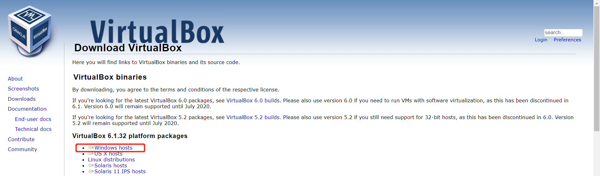

1.8. 2 Download Linux system image
Click to download: Linux ubuntu20.04
1.9. 3 Import Linux system image
Click Manage in the Virtual Box interface -> Import virtual machine -> Select virtual image -> Select installation path and import, and install as follows.


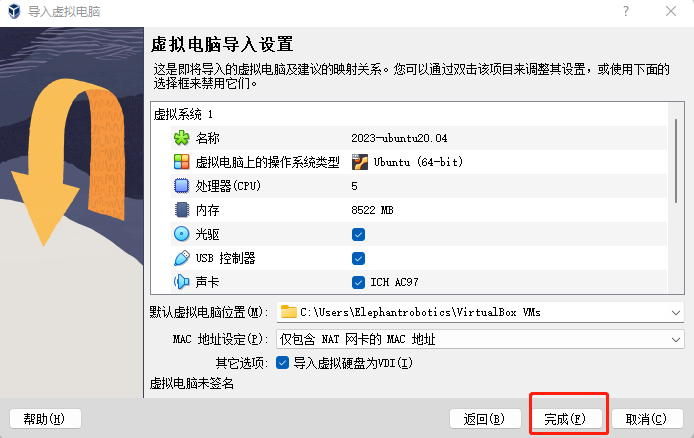
Wait for the image to be imported. The installation is successful as shown below.
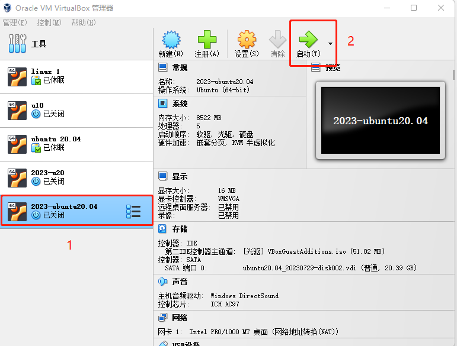
Then start the system. The default password is 123
The ROS1 environment is now complete. For the use of ROS1, please refer to 13.1.3 Introduction and Use of Rviz.